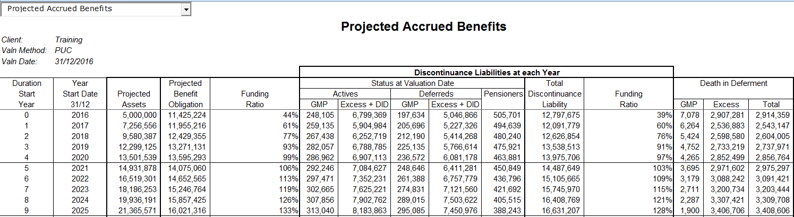
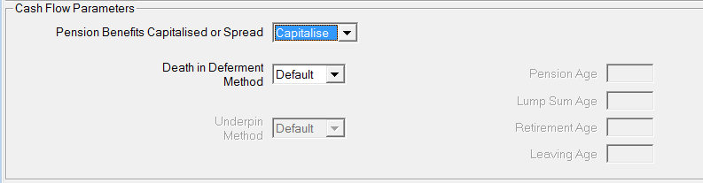
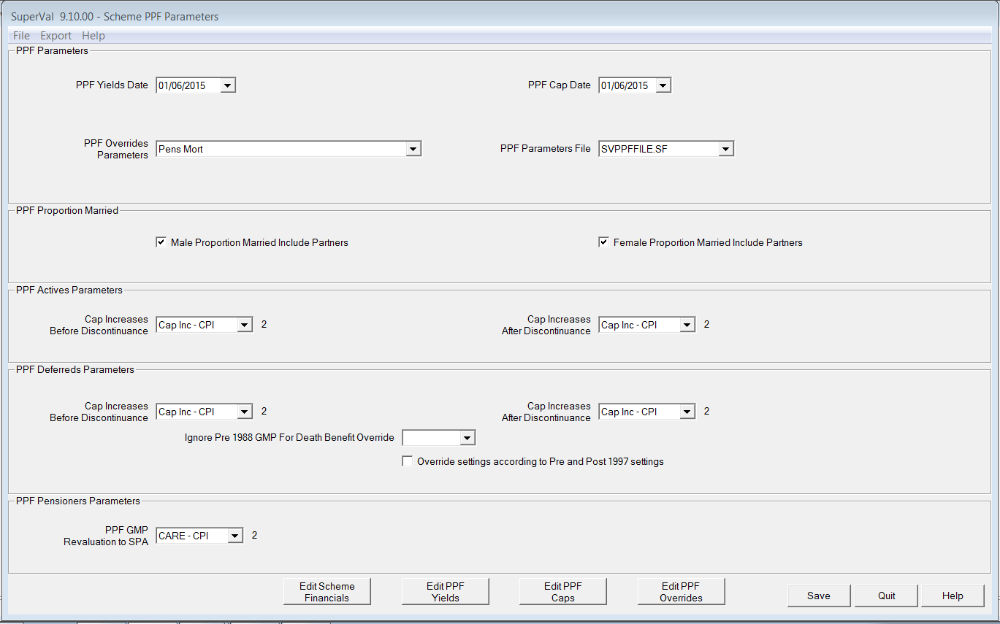
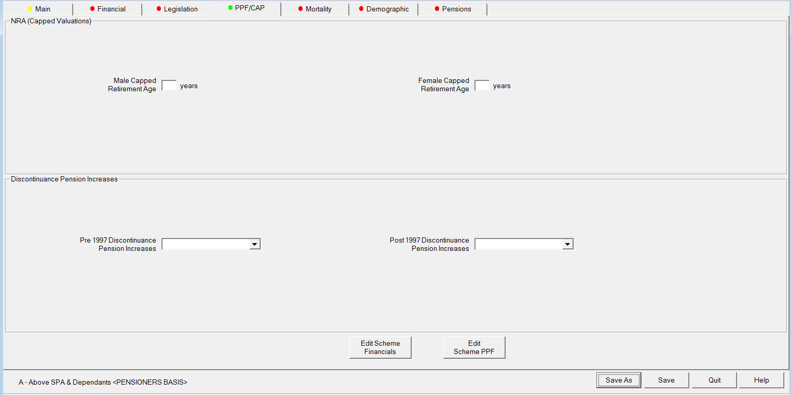

Projecting discontinuance benefits¶
There is a TAS P requirement that in each valuation, the Scheme Funding Report should include projections of the funding level at the expected effective date of the next Scheme Funding assessment on the solvency basis and the technical provisions basis.
This could potentially mean projecting the Technical provisions, Solvency and the level of PPF Benefits on a Solvency basis by three years.
Because of the nature of the PPF benefit this is a difficult calculation. We have leveraged the current functionality of SuperVal to carry out this calculation. Even so, our approach involves several approximations and gaining a full understanding of the approach is not easy.
The approach is described below.
Technical approach¶
Overview¶
Calculating the PPF benefit in the event of discontinuance in 3 years time involves:
-
Projecting the scheme benefits for 3 years allowing for decrements, pension increases and the other valuation assumptions
-
Converting the scheme benefit to an accrued PPF benefit at that point – so capping and reducing by 10% where appropriate, and splitting the resulting pension or deferred pension into pre- and post-1997 components with the pre-97 having no increases and post-97 increasing at LPI (2.5%).
-
Valuing the resulting accrued PPF benefits.
To value the PPF level of benefits on a Solvency basis see Non-PPF-capped valuations. To project the benefits for example by 3 years you could run the Actives with a Solvency basis on a 3-year PUC. Once the run is consolidated the system will have the projected benefits listed in the Excel output. This will project the benefits to the end of the year and then value the accrued benefits at that point.
SuperVal also supports the Defined Accrued Benefit method of valuation. The essence of this method is to project the scheme benefits over a defined control period and then calculate the value of accrued discontinuance benefits at that point.
Both of these methods are suitable for valuing PPF benefits on a Solvency basis, though the PUC run may be more familiar to users. The main change from the normal PUC and DAB approach is that the accrued benefit at the end of the period is converted to a PPF benefit before being valued. We have introduced a “capping” concept into the batching parameters to enable SuperVal users to carry out the PPF capping. Typically the control period will be 3 years.

As, only Accrued Benefits at the Valuation Date are shown in the valuation output, in order to get the figures required for projection purposes, valuation runs should be consolidated. This value is obtained from the AB1 column on the consolidation output. In order to get intelligible figures, all benefits must be capitalised.
Tip The cashflows can be set to Capitalise using the Cash Flow Parameters on the Main tab.

Capping parameters¶
Set the capping parameters as follows.
Set the valuation batch capping parameter to Cap Accrued Benefits.
On the scheme PPF Parameter settings specify:
- Amount of the Cap at age 65 at the valuation date
- Cap age adjustment factor to allow for varying PPF NRAs
- Cash factors to allow for Cash on Top benefits which must also be capped.
- Cap increase rate before discontinuance and after discontinuance. The After Discontinuance parameter lets you adjust the Cap for the period between the discontinuance date and NRA.
- PPF Cap Date
The Pre-97 and Post-97 pension increases to be applied to the discontinuance benefits (i.e. increases after the end of the control period) can be specified on the PPF/Cap tab. Note that the increase rates in the control period are those in the valuation basis for the scheme benefits.

Emerging benefits and discontinuance¶
Emerging benefits are those relating to decrements in the control period (e.g. retirements from active, death in deferment).
Discontinuance benefits are those relating to members staying in the same status throughout the control period and then discontinuing. This includes Actives discontinuing to Deferred status with PPF benefits at the end of the control period, and Deferreds converting to PPF benefits.
The sum of the discontinuance and emerging benefits is the total scheme benefits assuming discontinuance at the end of the control period on PPF terms.
Broadly, the capping parameters are applied to discontinuance benefits and not to emerging benefits. So emerging benefits are treated in the same way as before but discontinuance benefits are not. This has implications for the parameter settings as described in this document.
Emerging benefits and discontinuance benefits are handled differently as follows:
- Capping is only applied to Discontinuance benefits
- 10% reduction only applied to discontinuance benefits
- The Pre-97 and Post-97 pension increases to be applied after the control period are only applied to the discontinuance benefits
Setting up the basis modules¶
Assuming we are looking at a 3-year control period where normal benefits will be valued for 3 years and after that, PPF level benefits will be valued.
Pensioners¶
To value PPF benefits after 3 years, the pension-increase rates for the
years after the end of the control period must be set to the Pre-97 and
Post-97 PPF increase rates as appropriate for each Pension Definition.
So each increase will require a vector value such as 2, 2, 2, 0: the
first three relating to scheme benefits in the control period, and the last
to PPF benefits after discontinuance.
The capping applied in the Pensioner module will be based on the a
member having the MemorSp Member or Spouse indicator set to M, if
the ceasing age for a pension definition is 120 and if the age is less
than the NRA specified on the PPF/Cap tab. Dependants who have the S
MemorSp indicator will not be subject to capping. Temporary pensions
with ceasing ages less than 120 are also uncapped.
PPF S179 (Levy) valuations for more information on the PPF cap.
When calculating discontinuance benefits, the Pre-97 rate (as defined on the PPF/Cap tab) is used for all Pre-97 PUPs (as defined by Pre-97 PPF Service Period indicator) and the Post-97 rate is used for all other PUPs. The Pre-97 rate is the default.

Deferreds¶
Emerging benefits¶
If the decrement is retirement from deferred, this will be at NRA so
capping etc. will not be required and is not applied. However the
conversion to PPF benefits at the end of the control period will need to
be handled. To enable this, the pension increase rates for the years
after the end of the control period must be set to the Pre-97 and
Post-97 PPF increase rates as appropriate for each PUP. Note that for
each type of increase, this will almost always require a vector value –
e.g. 3.5,3.5,3.5,0, the first three relating to scheme benefits in the
control period, and the last to PPF benefits after discontinuance.
Discontinuance benefits¶
These will always result from the conversion from a scheme benefit to a PPF benefit at the end of the control period. Capping, 90% and the Pre-97 and Post-97 pension increases will be applied to the discontinuance benefits. Death in deferment is handled in line. When calculating discontinuance benefits, the Pre-97 rate (as defined on the PPF/Cap tab) is used for all Pre-97 PUPs (as defined by Pre-97 PPF Service Period indicator) and the Post-97 rate is used for all other PUPs. The Pre-97 rate is the default.
Actives¶
Emerging benefits¶
If the decrement is normal retirement, then the approach is analogous to
deferred retiring, but using the pension-increase parameters for Actives
in the control period. Note that for each type of increase, this will
almost always require a vector value – e.g. 3,3,3,2.25, the first three
relating to scheme benefits in the control period, and the last to PPF
benefits after discontinuance.
For example, if the Salary Increase rate is 3% and the Deferred
Revaluation rate is 2%, then the Salary Increase parameter in the Basis
file could be 3 3 3 2 to ensure that only three salary increases are
applied.
If the decrement is for early retirement or withdrawal then capping and reduction will not be applied. So the best approach will normally be to ignore early retirement and withdrawal. If the decrement is for ill health then again the capping will not be applied, but as PPF capping does not normally apply to such retirements this may well be OK. It would be normal to have a death decrement.
Discontinuance benefits¶
These will always result from the conversion from a scheme benefit to a PPF benefit at the end of the control period. Capping, 90% and the Pre-97 and Post-97 pension increases will be applied to the discontinuance benefits. The Pre-97 rate, set on the PPF/CAP tab, is used for all Pre-97 slices (as defined by offset slice) and the Post-97 rate is used for the other slices.
Miscellaneous¶
For death in deferment, if such benefits as lump sums are not required they should be set to zero.
For completeness, projected PPF solvency is also calculated for the years in the control period. These calculations are less accurate – one reason being that they assume the changeover to PPF pension increase rates come into force at the end of the control period for emerging benefits.
PPF NRA and PPF Proportions married are not used in the calculations.
For actives, the Pre-97 benefits as at the valuation date are compared with the GMPs as at the valuation date and are increased as appropriate. The GMPs are then reset to zero.
For enhanced deferreds the GMPs are treated as Pre97 irrespective of
the parameters on the GMP tab. They are then costed as Pre-97 pension
and the GMPs reset to zero. If franking in deferment is set to Yes the
GMPs are ignored. No comparison is made with the total PUPs at the
valuation date.
Underpin is ignored.
The cap applied to Actives DID is the cap applicable to the NRA and not the cap applicable at the date of death.
The adjusted benefits at the valuation date are then fed through the existing accrued benefit calculations
Actives cash on top is ignored unless it is a multiple of pension (2.25, 3 or user-defined) or 3/80ths for each year of service.
Enhanced Deferreds cash on top is ignored unless it is a multiple of pension.
Capping can also be applied to other valuation methods.
No amendments have been made to the treatment of the assets and contributions in the cashflows.